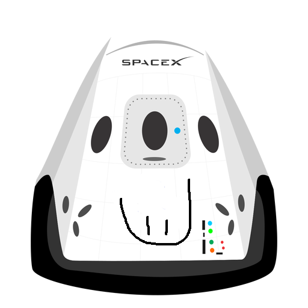

Hyperblog
Tu blog de confianza
Aquí empieza la historia de un gran proyecto
Y este es el párrafo de inicio donde vamos a explicar las cosas increíbles que se pueden hacer con ramas


Los blogs son la mejor forma de com partir información y tus ideas. Mucho mas que ir a conferencias o salir en Youtube. Excepto si eres un rockstar. Pero estadísticamente no lo eres.... por ahora.
Suscribete y dale like